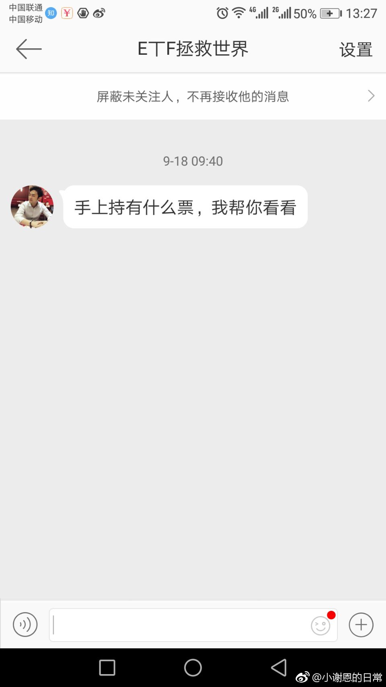
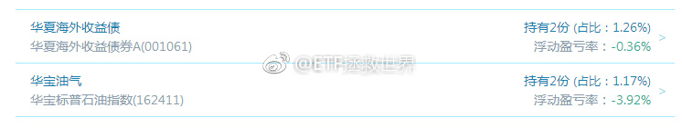

回复@happymami:如果是目前这样，明确的说，月底不会开A股的车了。//@happymami:大盘跌不下去吗？昨天跌了，今天又涨上来，不知月底还能开车不？@ETF小迷妹:激动得差点上了高仿的当@ETF拯救世界 
回复@夜雨梧桐2010:赔钱和傻是两个范畴的概念好吗。//@夜雨梧桐2010:ee，我来帮你，借点钱给我，我不还，你就赔了......@ETF拯救世界:这两年计划交易的18个品种，就剩这两个了。赔钱为什么这么难。为什么。 
谢谢。@财联社APP:【要闻：人民币中间价下调140点 连续两日调贬】财联社20日讯，人民币兑美元中间价报6.5670，下调140点。前一交易日中间价报6.5423。【人民币中间价下调140点 连续两日调贬】财联社20日讯，人民币兑美元中间价报6.5670，下调140点。前一交易日中间价报6.5423，官方收盘报6.5859，夜盘收盘报6.5860